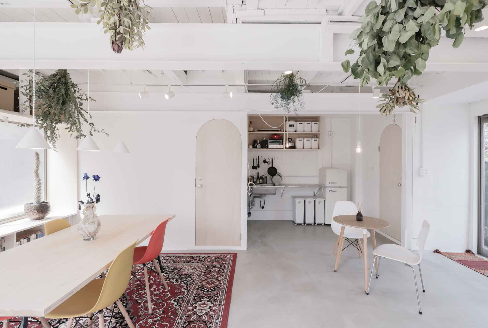

{{#extend "pages"}}
  {{#content "main"}}
    <main class="main">

      <section class="contents">
        <h2 class="contents__title">
          大田区の小屋
        </h2>
        <h3 class="contents__subtitle">
          Ota-ku,Tokyo,Japan
        </h3>

        <ul class="contents__list">
          <li class="contents__item">
            
          </li>
          <li class="contents__item">
            
          </li>
        </ul>
      </section>
    </main>
  {{/content}}
{{/extend}}
